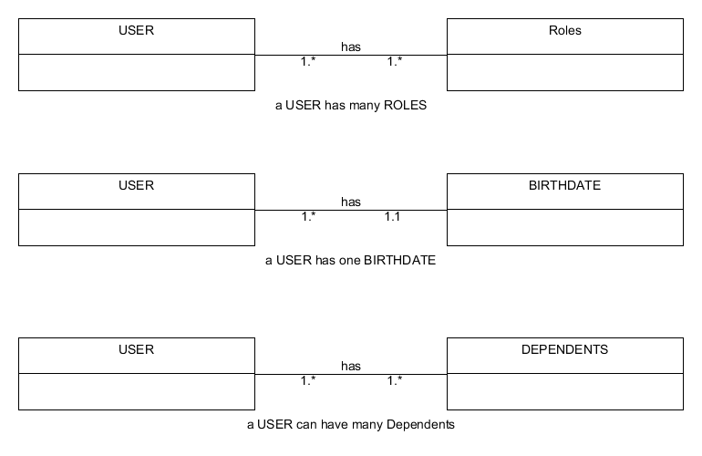
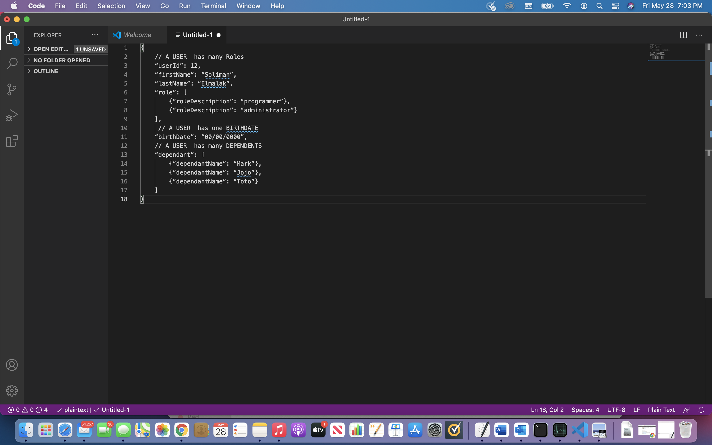
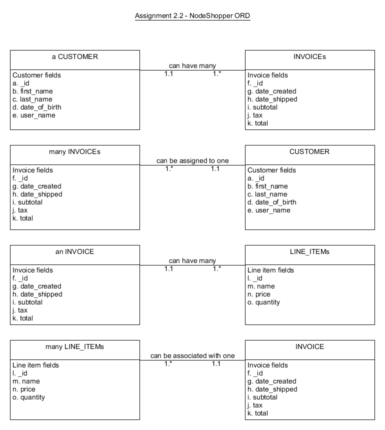
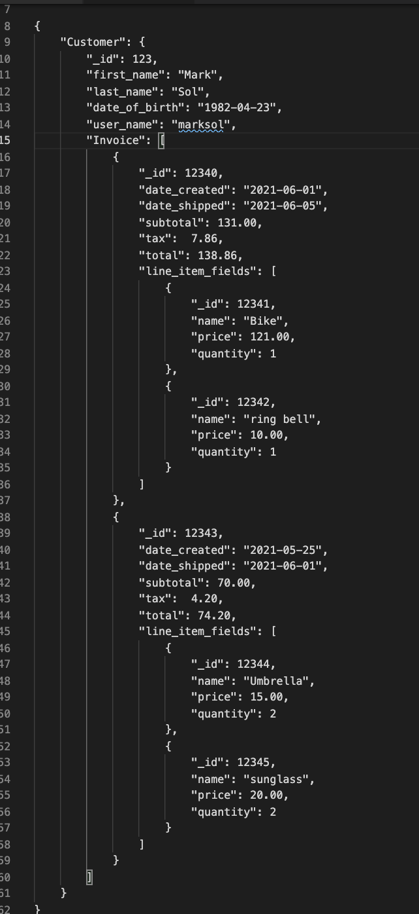
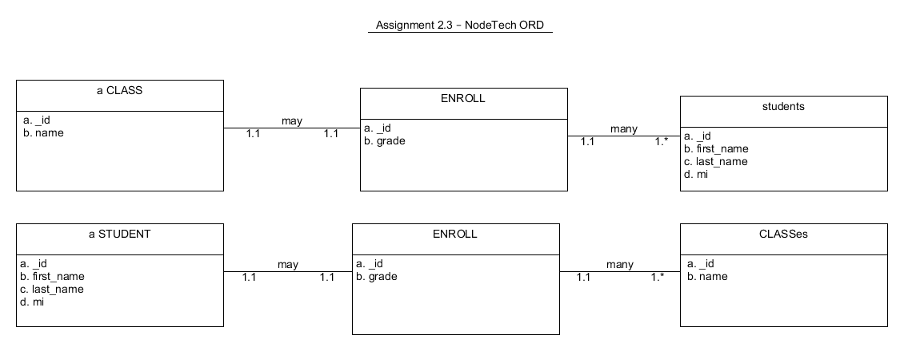
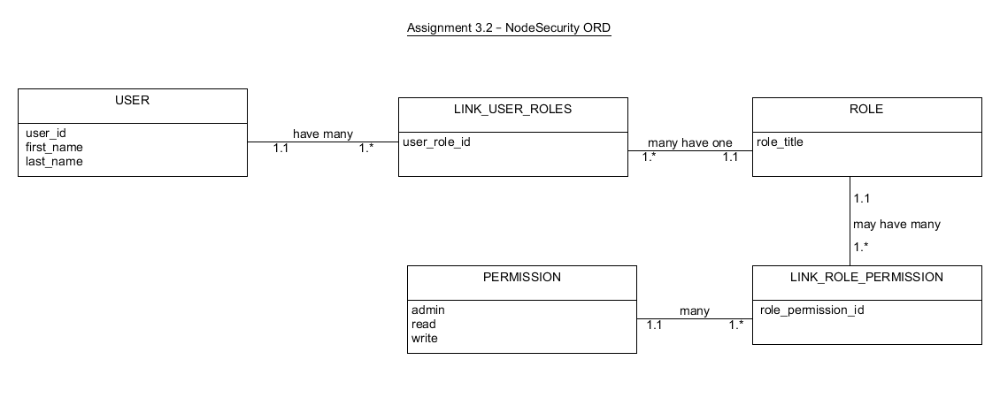
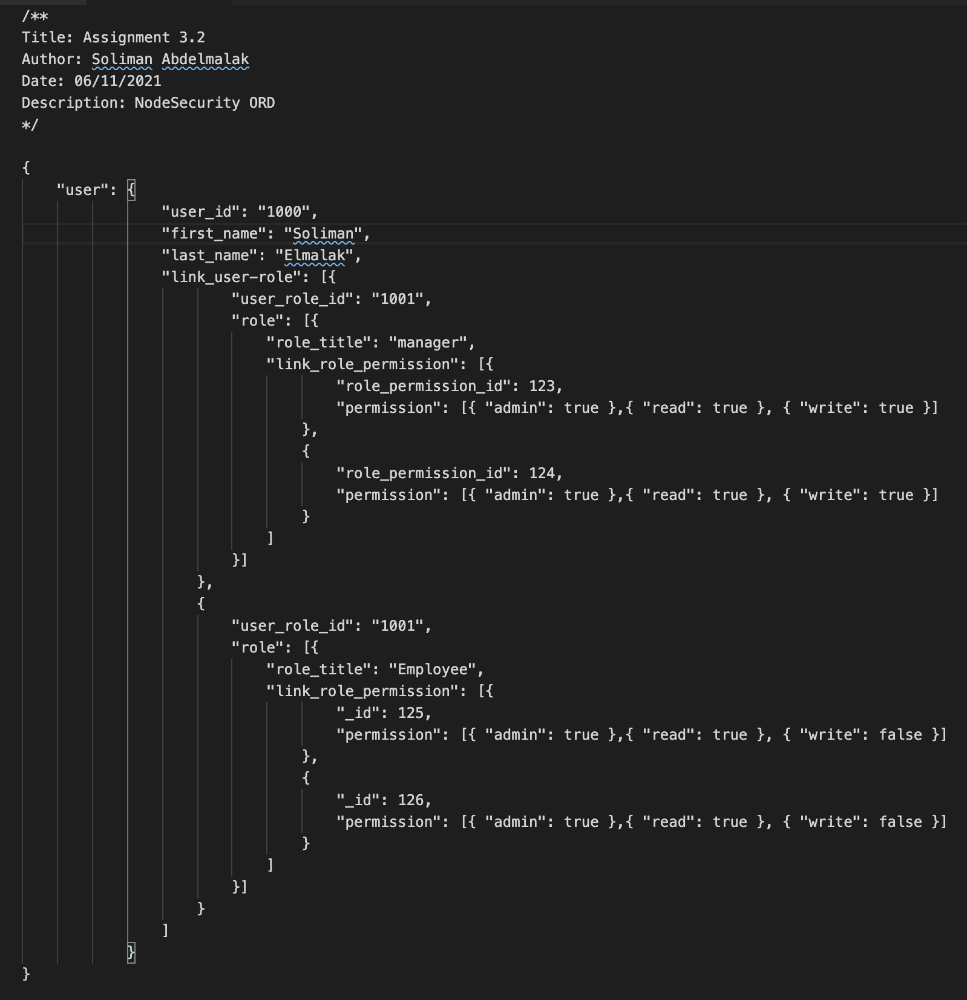
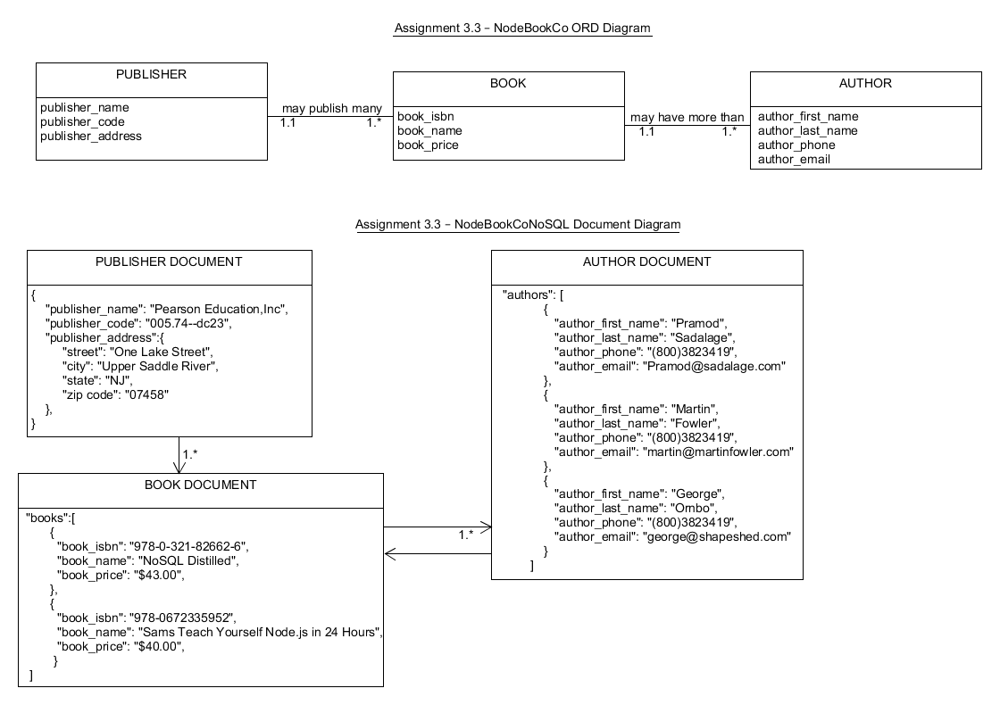
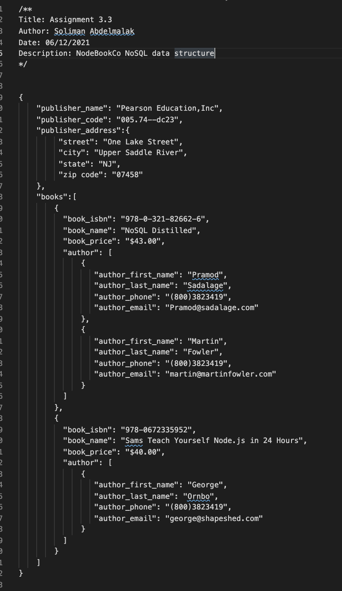

Welcome to my Database-diagrams page
Diagrams Gallery
ORD Data Models

TThis is an image of the Object Relational Diagrams that were created using the following rules.
A A USER has many Roles, A USER has one BIRTHDATE, and A USER has many DEPENDENTS.
NoSQL Data Models Structure

This is an image of the NoSQL Data Structure created after the UMLet Object Relational Diagram using the same rules as the previous ORD diagram.
NodeShopper ORD

This is an image of the NodeShopper ORD Diagrams that were created using the following rules. a CUSTOMER can have many INVOICEs, many INVOICEs can be assigned to one CUSTOMER, an INVOICE can have many LINE_ITEMs, many LINE_ITEMs can be associated with one INVOICE
NoSQL NodeShopper Data Structure

This is an image of the NoSQL NodeShopper Data Structure created after the UMLet NodeShopper ORD Diagrams using the same rules as the previous NodeShopper ORD diagram.
NodeTech ORD

This is an image of the NodeTech ORD Diagrams that were created using the following rules. a CLASS may ENROLL many students, each STUDENT may ENROLL in many CLASSes.
NodeTech NoSQL Data Structure

NodeSecurity ORD

A USER can have many LINK_USER_ROLE, Many LINK_USER_ROLE may have just one ROLE, A ROLE can have many LINK_ROLE_PERMISSION, A PERMISSION can be assigned to many LINK_ROLE_PERMISSION.
NodeSecurity NoSQL Data Structure

This is an image of the NoSQL NodeSecurity Data Structure created after the UMLet NodeSecurity ORD Diagrams using the same rules as the previous ORD NodeSecurity diagram.
NodeBookCo ORD

A PUBLISHER may publish many BOOKs, A BOOK only has one PUBLISHER, A BOOK can have many AUTHORs, An AUTHOR can write many BOOKs.
NodeBookCo NoSQL Data Structure

This is an image of the NoSQL NodeBookCo Data Structure created after the UMLet NodeBookCo ORD Diagrams using the same rules as the previous ORD NodeBookCo diagram.